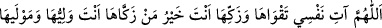

nefs-i mutlakanın hakîkati kendisi ile birlikte başka bir hüküm îtibara alınmadan Allah’a
küllî bir teveccüh ile yöneldiğinde “nefs-i mutmainne” diye isimlendirilir. Küllî bir
teveccüh ile tabîata yöneldiğinde “nefs-i emmâre” adı verilir. Bâzen Hakk’a takvâ ile,
bazen günahlarla beşerî tabîata yönelirse “nefs-i levvâme” adı verilir.
İmrân b. Husayn (r.a.)’tan gelen sahih bir habere göre Cüheyne veya Müzeyne
kabilesinden bir adam Rasûlullah (s.a.)’e “İnsanların yaptıkları veya uğraşıp
didindikleri şeyler kaza ve kader ile mi oluyor, yoksa bunlar gelecekte karşı karşıya
kalacakları hususlar mıdır?” diye sordu. Hz. Peygamber (s.a.) “Hayır, tam tersine
Allah’ın takdiri gereğince yapıyorlar.” diye cevap verdi. Bunun üzerine adam: “O
halde ne uğruna amel ediliyor, ey Allah’ın Rasûlü?” diye sordu. Hz. Peygamber (a.s.)
şöyle cevap verdi: “Allah iki mertebeden birisi için yarattığı kimseyi o mertebe için
hazırlar.” Ardından (tefsirini yapılan) bu âyeti okudu.[113]
İbn Abbâs (r.anhümâ)’dan rivâyete göre “Rasûlullah (s.a.) bu âyeti okuyunca şöyle
duâ ederdi:
“
Allah’ım nefsime takvâsını ver ve onu tezkiye et/arındır. Sen onu arındıranların en
hayırlısısın. Sen onun velîsi ve mevlâsısın.” [114]
9. Nefsini kötülüklerden arındıran kurtuluşa ermiştir.
Bu ifâde yukarda geçen yeminin cevabıdır.
“Kezzebet/nefis yalanladı” ifâdesi yeminin cevabı yapılmamıştır. Çünkü Allah
Teâlâ’nın kasemleri ile ancak vaad ve vaîd pekiştirilir. Bu ifâde ise ikisinden de
değildir. “Kurtuluşa ermiştir” ifâdesi ise tezkiye sebebiyle her türlü hayrın elde
edileceğine dâir bir vaaddir. Sonraki âyetteki “ziyan etmiştir” ifâdesi ise öncekilerin
zıddına olan kimselerin hüsrâna uğrayacaklarına dâir bir vaîddir.
“Felâh/kurtuluş” zafer ve amacına erişmek demektir. Felah dünyevî ve uhrevî olmak
üzere ikiye ayrılır. Dünya hayatını hoş hale getiren zenginlik, izzet, sağlıklı uzun ömür
gibi mutluluklara erişmek dünyevîdir. Fenâsı olmayan bakâ, fakirliği olmayan zenginlik,
zilleti olmayan izzet ve cehaleti olmayan ilim ise uhrevîdir. Bundan dolayı “hayat ancak
âhiret hayatıdır.” denilmiştir.
“Zekkâhâ” ifâdesinde geçen fiilin kökü olan “zekât” ziyadelik ve artma anlamınadır.
Ekinde çok gelişme ve bereket meydana geldiğinde bu kelime kullanılır. ‘Kadı’nın
şâhidi tezkiye etmesi’ ifâdesi de buradandır. Çünkü hâkim şâhidi âdil sayarak onun
kadirini yükseltir. “Zekât” kelimesi de bu köktendir. İnsan bereket veya nefsi tezkiye,